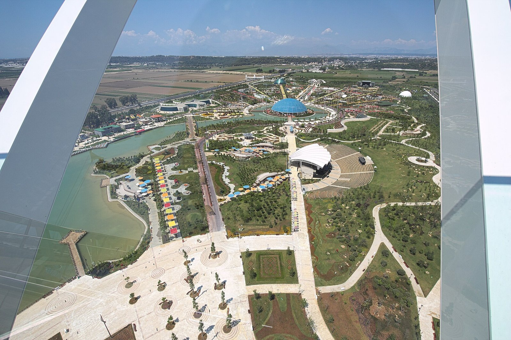

In 3 punti · Mondo
COP31 finita senza accordo: perché e cosa cambia per Europa e Italia
Ad Antalya nessun documento finale per la prima volta dal 2000: il nodo dei combustibili fossili, cosa resta in vigore, la posizione dell'Ue e quella del governo italiano.

Domenica 22 novembre, dopo 44 ore di tempi supplementari, la COP31, la conferenza dell'Onu sul clima di Antalya, in Turchia, si è chiusa senza la cover decision, il documento politico finale. Secondo Health Policy Watch non succedeva dalla COP6 dell'Aia, nel 2000. Il presidente della conferenza, il ministro turco Murat Kurum, ha preso atto che «non c'è accordo su questo testo». Avevamo seguito le ultime ore del negoziato in COP31 ai supplementari.
1Perché è saltato
Il nodo sono stati petrolio, gas e carbone. Alla COP28 di Dubai, nel 2023, i Paesi si erano impegnati per la prima volta ad «allontanarsi dai combustibili fossili» nei sistemi energetici. Ad Antalya l'ultima bozza non li nominava più.
- Chi voleva citarli: Unione europea, Regno Unito, Norvegia, Panama e diversi Stati insulari hanno respinto il compromesso perché non richiamava l'impegno di Dubai.
- Chi non li voleva: i Paesi guidati dall'Arabia Saudita e la Russia non accettavano alcun riferimento ai combustibili fossili.
2Cosa vuol dire
Senza documento finale non c'è un nuovo impegno politico comune dei quasi 200 Paesi che partecipano ai negoziati. Restano validi gli impegni già presi, dall'Accordo di Parigi del 2015 alla decisione di Dubai, ma non se ne aggiungono di nuovi: né sull'uscita dai fossili, né sull'obiettivo della presidenza di portare l'elettricità al 35% dei consumi finali di energia entro il 2035. I temi aperti passano alla COP32, che si terrà ad Addis Abeba, in Etiopia, nel novembre 2027.
3L'Europa
L'Unione europea, guidata nel negoziato dal commissario Wopke Hoekstra, ha scelto di non firmare un testo senza i combustibili fossili. «Non accetteremo una COP che fa greenwashing dei combustibili fossili», ha detto per la presidenza di turno dell'Ue il ministro irlandese Darragh O'Brien. Bruxelles dovrà ora portare avanti i propri obiettivi sul clima senza un nuovo accordo globale a sostegno.
E l'Italia
In un'intervista al Corriere della Sera del 23 novembre il ministro dell'Ambiente Gilberto Pichetto Fratin ha detto: «L'Italia concorda: serve una riduzione progressiva ed equa delle emissioni». Ma ha aggiunto che «non basta fissare una percentuale, occorre rendere conveniente l'investimento evitando nuove dipendenze industriali». Sul nucleare ha annunciato: «Entro Natale presenteremo i decreti attuativi». Durante il negoziato il governo aveva chiesto che la nuova elettricità venisse da fonti pulite, cioè per l'esecutivo rinnovabili e nucleare.
La domanda di ParrhesIA: se quasi 200 Paesi non riescono più a mettersi d'accordo sul clima, chi deve decidere?
Fonti
- Health Policy Watch, 23 novembre 2026: COP31 ends with no deal
- CBS News, 22 novembre 2026: COP31 ends with no agreement
- Carbon Brief, 20 novembre 2026: DeBriefed, deal distant
- Ansa, 21 novembre 2026: Cover Decision a rischio, l'Ue vuole l'uscita dai fossili
- Il Sussidiario, 23 novembre 2026: Pichetto Fratin al Corriere della Sera
Questo articolo è stato scritto con l'intelligenza artificiale e verificato sulle fonti indicate. Hai trovato un errore? Segnalalo sui nostri social: le correzioni vengono pubblicate qui con la data della modifica.